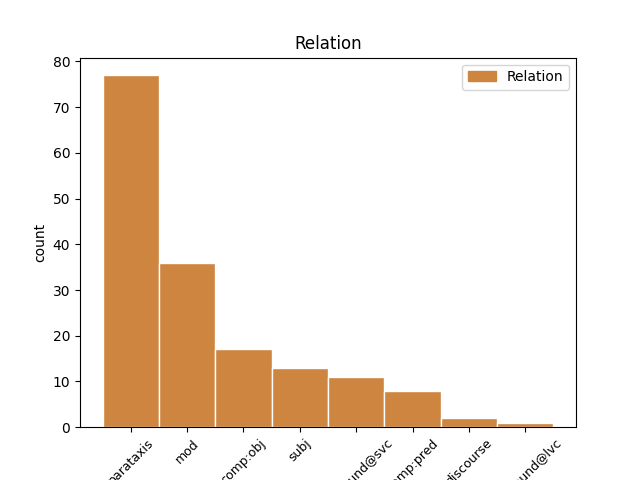
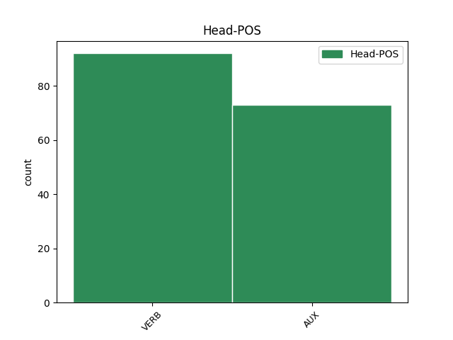
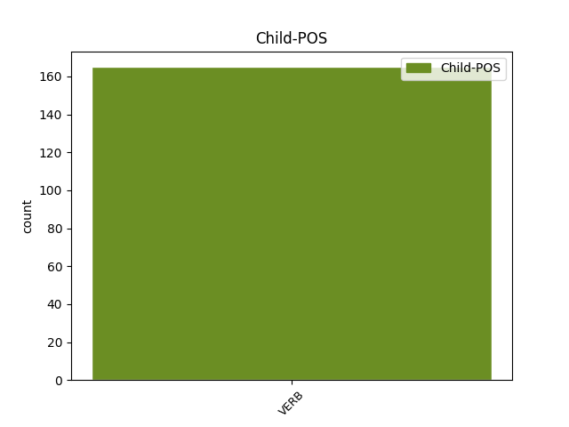

Distribution of features within this leaf



Agreement Rules sorted by frequency.
- When the dependent token is the parataxis(parataxis) of the head token, and the dependent token is VERB.
1 Նրան _ _ _ _ 0 _ _ _
2 կարող _ _ _ _ 0 _ _ _
3 են եմ AUX _ Aspect=Imp|Mood=Ind|Number=Plur|Person=3|Polarity=Pos|Tense=Pres|VerbForm=Fin 0 _ _ _
4 ազատազրկել _ _ _ _ 0 _ _ _
5 , _ _ _ _ 0 _ _ _
6 գնդակահարել _ _ _ _ 0 _ _ _
7 , _ _ _ _ 0 _ _ _
8 տեղափոխել _ _ _ _ 0 _ _ _
9 ԵԱՏՄ _ _ _ _ 0 _ _ _
10 անդամ _ _ _ _ 0 _ _ _
11 այլ _ _ _ _ 0 _ _ _
12 երկրի _ _ _ _ 0 _ _ _
13 բանտ _ _ _ _ 0 _ _ _
14 , _ _ _ _ 0 _ _ _
15 չէ _ _ _ _ 0 _ _ _
16 ՞ _ _ _ _ 0 _ _ _
17 որ _ _ _ _ 0 _ _ _
18 մենք _ _ _ _ 0 _ _ _
19 հիմա _ _ _ _ 0 _ _ _
20 մեկ _ _ _ _ 0 _ _ _
21 ընդհանուր _ _ _ _ 0 _ _ _
22 բանտ _ _ _ _ 0 _ _ _
23 ունենք ունեմ VERB _ Aspect=Imp|Mood=Ind|Number=Plur|Person=1|Polarity=Pos|Subcat=Tran|Tense=Pres|VerbForm=Fin|Voice=Act 3 parataxis _ LTranslit=ownem|SpaceAfter=No|Translit=ownenk’
24 : _ _ _ _ 0 _ _ _
1 Ես _ _ _ _ 0 _ _ _
2 տասնյոթ _ _ _ _ 0 _ _ _
3 տարեկան _ _ _ _ 0 _ _ _
4 էի _ _ _ _ 0 _ _ _
5 ու _ _ _ _ 0 _ _ _
6 հաստատ _ _ _ _ 0 _ _ _
7 գիտեի _ _ _ _ 0 _ _ _
8 , _ _ _ _ 0 _ _ _
9 որ _ _ _ _ 0 _ _ _
10 հրապարակ _ _ _ _ 0 _ _ _
11 եմ _ _ _ _ 0 _ _ _
12 իջնելու _ _ _ _ 0 _ _ _
13 , _ _ _ _ 0 _ _ _
14 իսկ _ _ _ _ 0 _ _ _
15 Ֆորմանի _ _ _ _ 0 _ _ _
16 ֆիլմը _ _ _ _ 0 _ _ _
17 ես _ _ _ _ 0 _ _ _
18 հետո _ _ _ _ 0 _ _ _
19 նայեցի նայել VERB _ Aspect=Perf|Mood=Ind|Number=Sing|Person=1|Polarity=Pos|Subcat=Intr|Tense=Past|VerbForm=Fin|Voice=Mid 0 _ _ _
20 , _ _ _ _ 0 _ _ _
21 երբ _ _ _ _ 0 _ _ _
22 Ղարաբաղի _ _ _ _ 0 _ _ _
23 հարցը _ _ _ _ 0 _ _ _
24 բանակցային _ _ _ _ 0 _ _ _
25 սեղանի _ _ _ _ 0 _ _ _
26 չավարտվող _ _ _ _ 0 _ _ _
27 զրույց _ _ _ _ 0 _ _ _
28 դարձավ դառնալ VERB _ Aspect=Perf|Mood=Ind|Number=Sing|Person=3|Polarity=Pos|Subcat=Intr|Tense=Past|VerbForm=Fin|Voice=Mid 19 mod _ LTranslit=daṙnal|SpaceAfter=No|Translit=darjav
29 ։ _ _ _ _ 0 _ _ _
1 Միայն _ _ _ _ 0 _ _ _
2 տեսնում _ _ _ _ 0 _ _ _
3 էին _ _ _ _ 0 _ _ _
4 , _ _ _ _ 0 _ _ _
5 որ _ _ _ _ 0 _ _ _
6 երբեմն _ _ _ _ 0 _ _ _
7 առավոտյան _ _ _ _ 0 _ _ _
8 , _ _ _ _ 0 _ _ _
9 երբեմն _ _ _ _ 0 _ _ _
10 երեկոյան _ _ _ _ 0 _ _ _
11 Գյուղ _ _ _ _ 0 _ _ _
12 է _ _ _ _ 0 _ _ _
13 իջնում _ _ _ _ 0 _ _ _
14 , _ _ _ _ 0 _ _ _
15 նայում _ _ _ _ 0 _ _ _
16 ՝ _ _ _ _ 0 _ _ _
17 ինչ _ _ _ _ 0 _ _ _
18 կա կամ VERB _ Aspect=Imp|Mood=Ind|Number=Sing|Person=3|Polarity=Pos|Subcat=Intr|Tense=Pres|VerbForm=Fin|Voice=Mid 0 _ _ _
19 - _ _ _ _ 0 _ _ _
20 չկա կամ VERB _ Aspect=Imp|Mood=Ind|Number=Sing|Person=3|Polarity=Neg|Subcat=Intr|Tense=Pres|VerbForm=Fin|Voice=Mid 18 compound@svc _ LTranslit=kam|Translit=čka
21 ու _ _ _ _ 0 _ _ _
22 դարձյալ _ _ _ _ 0 _ _ _
23 բարձրանում _ _ _ _ 0 _ _ _
24 Հաչա _ _ _ _ 0 _ _ _
25 Քարի _ _ _ _ 0 _ _ _
26 տակ _ _ _ _ 0 _ _ _
27 ՝ _ _ _ _ 0 _ _ _
28 Մկաց _ _ _ _ 0 _ _ _
29 Աղբրի _ _ _ _ 0 _ _ _
30 մոտ _ _ _ _ 0 _ _ _
31 գտնվող _ _ _ _ 0 _ _ _
32 իր _ _ _ _ 0 _ _ _
33 ժայռափորը _ _ _ _ 0 _ _ _
34 ։ _ _ _ _ 0 _ _ _
1 Իսկ _ _ _ _ 0 _ _ _
2 ով _ _ _ _ 0 _ _ _
3 այդ _ _ _ _ 0 _ _ _
4 կապն _ _ _ _ 0 _ _ _
5 ունակություն _ _ _ _ 0 _ _ _
6 չունի ունեմ VERB _ Aspect=Imp|Mood=Ind|Number=Sing|Person=3|Polarity=Neg|Subcat=Tran|Tense=Pres|VerbForm=Fin|Voice=Act 10 subj _ LTranslit=ownem|Translit=čowni
7 տեսնելու _ _ _ _ 0 _ _ _
8 , _ _ _ _ 0 _ _ _
9 ուզում _ _ _ _ 0 _ _ _
10 է եմ AUX _ Aspect=Imp|Mood=Ind|Number=Sing|Person=3|Polarity=Pos|Tense=Pres|VerbForm=Fin 0 _ _ _
11 փոփոխություն _ _ _ _ 0 _ _ _
12 , _ _ _ _ 0 _ _ _
13 բայց _ _ _ _ 0 _ _ _
14 չի _ _ _ _ 0 _ _ _
15 գիտակցում _ _ _ _ 0 _ _ _
16 , _ _ _ _ 0 _ _ _
17 որ _ _ _ _ 0 _ _ _
18 ինքը _ _ _ _ 0 _ _ _
19 գործ _ _ _ _ 0 _ _ _
20 ունի _ _ _ _ 0 _ _ _
21 անելու _ _ _ _ 0 _ _ _
22 , _ _ _ _ 0 _ _ _
23 որ _ _ _ _ 0 _ _ _
24 իր _ _ _ _ 0 _ _ _
25 ընտրությամբ _ _ _ _ 0 _ _ _
26 պատասխանատու _ _ _ _ 0 _ _ _
27 է _ _ _ _ 0 _ _ _
28 դրա _ _ _ _ 0 _ _ _
29 համար _ _ _ _ 0 _ _ _
30 : _ _ _ _ 0 _ _ _
1 Մենք _ _ _ _ 0 _ _ _
2 չգիտեինք գիտել VERB _ Aspect=Imp|Mood=Ind|Number=Plur|Person=1|Polarity=Neg|Subcat=Tran|Tense=Imp|VerbForm=Fin|Voice=Act 0 _ _ _
3 հատկապես _ _ _ _ 0 _ _ _
4 ում _ _ _ _ 0 _ _ _
5 գլխում _ _ _ _ 0 _ _ _
6 և _ _ _ _ 0 _ _ _
7 ինչպես _ _ _ _ 0 _ _ _
8 ծնվեց ծնվել VERB _ Aspect=Perf|Mood=Ind|Number=Sing|Person=3|Polarity=Pos|Subcat=Intr|Tense=Past|VerbForm=Fin|Voice=Mid 2 comp:obj _ LTranslit=çnvel|Translit=çnvec’
9 այս _ _ _ _ 0 _ _ _
10 միտքը _ _ _ _ 0 _ _ _
11 , _ _ _ _ 0 _ _ _
12 բայց _ _ _ _ 0 _ _ _
13 ութսունութի _ _ _ _ 0 _ _ _
14 մայիսյան _ _ _ _ 0 _ _ _
15 մի _ _ _ _ 0 _ _ _
16 օր _ _ _ _ 0 _ _ _
17 Երևանի _ _ _ _ 0 _ _ _
18 պետական _ _ _ _ 0 _ _ _
19 համալսարանի _ _ _ _ 0 _ _ _
20 բանասիրական _ _ _ _ 0 _ _ _
21 ֆակուլտետի _ _ _ _ 0 _ _ _
22 220 _ _ _ _ 0 _ _ _
23 լսարանում _ _ _ _ 0 _ _ _
24 , _ _ _ _ 0 _ _ _
25 ժողովից _ _ _ _ 0 _ _ _
26 հետո _ _ _ _ 0 _ _ _
27 որոշվեց _ _ _ _ 0 _ _ _
28 իջնել _ _ _ _ 0 _ _ _
29 Ազատության _ _ _ _ 0 _ _ _
30 հրապարակ _ _ _ _ 0 _ _ _
31 և _ _ _ _ 0 _ _ _
32 նստացույց _ _ _ _ 0 _ _ _
33 սկսել _ _ _ _ 0 _ _ _
34 : _ _ _ _ 0 _ _ _
1 « _ _ _ _ 0 _ _ _
2 Ձիավոր _ _ _ _ 0 _ _ _
3 » _ _ _ _ 0 _ _ _
4 ա _ _ _ _ 0 _ _ _
5 , _ _ _ _ 0 _ _ _
6 — _ _ _ _ 0 _ _ _
7 բացատրում _ _ _ _ 0 _ _ _
8 էր _ _ _ _ 0 _ _ _
9 տանջանքից _ _ _ _ 0 _ _ _
10 նվաղած _ _ _ _ 0 _ _ _
11 կնոջը _ _ _ _ 0 _ _ _
12 , _ _ _ _ 0 _ _ _
13 — _ _ _ _ 0 _ _ _
14 մի _ _ _ _ 0 _ _ _
15 քիչ _ _ _ _ 0 _ _ _
16 էլ _ _ _ _ 0 _ _ _
17 սպասենք _ _ _ _ 0 _ _ _
18 , _ _ _ _ 0 _ _ _
19 թե _ _ _ _ 0 _ _ _
20 չեկավ _ _ _ _ 0 _ _ _
21 , _ _ _ _ 0 _ _ _
22 ձեռքս _ _ _ _ 0 _ _ _
23 կմտցնեմ մտցնել VERB _ Aspect=Prosp|Mood=Cnd|Number=Sing|Person=1|Polarity=Pos|Subcat=Tran|Tense=Pres|VerbForm=Fin|Voice=Act 0 _ _ _
24 կուղղեմ ուղղել VERB _ Aspect=Prosp|Mood=Cnd|Number=Sing|Person=1|Polarity=Pos|Subcat=Tran|Tense=Pres|VerbForm=Fin|Voice=Act 23 comp:pred _ LTranslit=owġġel|SpaceAfter=No|Translit=kowġġem
25 » _ _ _ _ 0 _ _ _
26 ։ _ _ _ _ 0 _ _ _
1 Փողը _ _ _ _ 0 _ _ _
2 հավաքում _ _ _ _ 0 _ _ _
3 , _ _ _ _ 0 _ _ _
4 հավաքում _ _ _ _ 0 _ _ _
5 էի _ _ _ _ 0 _ _ _
6 , _ _ _ _ 0 _ _ _
7 հավաքվում _ _ _ _ 0 _ _ _
8 էր _ _ _ _ 0 _ _ _
9 ՝ _ _ _ _ 0 _ _ _
10 մտածում _ _ _ _ 0 _ _ _
11 էի _ _ _ _ 0 _ _ _
12 ՝ _ _ _ _ 0 _ _ _
13 ավել _ _ _ _ 0 _ _ _
14 գումար _ _ _ _ 0 _ _ _
15 է _ _ _ _ 0 _ _ _
16 , _ _ _ _ 0 _ _ _
17 հիվանդ _ _ _ _ 0 _ _ _
18 երեխա _ _ _ _ 0 _ _ _
19 է _ _ _ _ 0 _ _ _
20 , _ _ _ _ 0 _ _ _
21 չգիտեմ գիտել VERB _ Aspect=Imp|Mood=Ind|Number=Sing|Person=1|Polarity=Neg|Subcat=Tran|Tense=Pres|VerbForm=Fin|Voice=Act 23 discourse _ LTranslit=gitel|Translit=čgitem
22 ինչ _ _ _ _ 0 _ _ _
23 է եմ AUX _ Aspect=Imp|Mood=Ind|Number=Sing|Person=3|Polarity=Pos|Tense=Pres|VerbForm=Fin 0 _ _ _
24 , _ _ _ _ 0 _ _ _
25 դրա _ _ _ _ 0 _ _ _
26 համար _ _ _ _ 0 _ _ _
27 է _ _ _ _ 0 _ _ _
28 ... _ _ _ _ 0 _ _ _
29 : _ _ _ _ 0 _ _ _
Disagree Examples:
1 Մի _ _ _ _ 0 _ _ _
2 խոսքով _ _ _ _ 0 _ _ _
3 ՝ _ _ _ _ 0 _ _ _
4 մենք _ _ _ _ 0 _ _ _
5 դրա _ _ _ _ 0 _ _ _
6 հետ _ _ _ _ 0 _ _ _
7 էլ _ _ _ _ 0 _ _ _
8 գործ _ _ _ _ 0 _ _ _
9 չունենք ունեմ VERB _ Aspect=Imp|Mood=Ind|Number=Plur|Person=1|Polarity=Neg|Subcat=Tran|Tense=Pres|VerbForm=Fin|Voice=Act 0 _ _ _
10 , _ _ _ _ 0 _ _ _
11 մերը _ _ _ _ 0 _ _ _
12 չէ _ _ _ _ 0 _ _ _
13 այլևս _ _ _ _ 0 _ _ _
14 , _ _ _ _ 0 _ _ _
15 մերը _ _ _ _ 0 _ _ _
16 սա _ _ _ _ 0 _ _ _
17 է _ _ _ _ 0 _ _ _
18 ՝ _ _ _ _ 0 _ _ _
19 դժոխքը _ _ _ _ 0 _ _ _
20 , _ _ _ _ 0 _ _ _
21 որը _ _ _ _ 0 _ _ _
22 , _ _ _ _ 0 _ _ _
23 սակայն _ _ _ _ 0 _ _ _
24 , _ _ _ _ 0 _ _ _
25 հասցրել _ _ _ _ 0 _ _ _
26 ենք _ _ _ _ 0 _ _ _
27 սիրել _ _ _ _ 0 _ _ _
28 . _ _ _ _ 0 _ _ _
29 դեհ _ _ _ _ 0 _ _ _
30 , _ _ _ _ 0 _ _ _
31 շանը _ _ _ _ 0 _ _ _
32 որտեղ _ _ _ _ 0 _ _ _
33 էլ _ _ _ _ 0 _ _ _
34 կապես կապել VERB _ Aspect=Prosp|Mood=Sub|Number=Sing|Person=2|Polarity=Pos|Subcat=Tran|Tense=Pres|VerbForm=Fin|Voice=Act 9 parataxis _ LTranslit=kapel|SpaceAfter=No|Translit=kapes
35 , _ _ _ _ 0 _ _ _
36 կապվում _ _ _ _ 0 _ _ _
37 - _ _ _ _ 0 _ _ _
38 ընտելանում _ _ _ _ 0 _ _ _
39 - _ _ _ _ 0 _ _ _
40 սիրում _ _ _ _ 0 _ _ _
41 է _ _ _ _ 0 _ _ _
42 ։ _ _ _ _ 0 _ _ _
1 Սա _ _ _ _ 0 _ _ _
2 քո _ _ _ _ 0 _ _ _
3 մայրենին _ _ _ _ 0 _ _ _
4 է եմ AUX _ Aspect=Imp|Mood=Ind|Number=Sing|Person=3|Polarity=Pos|Tense=Pres|VerbForm=Fin 0 _ _ _
5 ՝ _ _ _ _ 0 _ _ _
6 սա _ _ _ _ 0 _ _ _
7 սովորիր սովորել VERB _ Mood=Imp|Number=Sing|Person=2|Subcat=Tran|VerbForm=Fin|Voice=Act 4 mod _ LTranslit=sovorel|SpaceAfter=No|Translit=sovorir
8 , _ _ _ _ 0 _ _ _
9 սա _ _ _ _ 0 _ _ _
10 քո _ _ _ _ 0 _ _ _
11 հայրենիքն _ _ _ _ 0 _ _ _
12 է _ _ _ _ 0 _ _ _
13 ՝ _ _ _ _ 0 _ _ _
14 էստեղ _ _ _ _ 0 _ _ _
15 ՛ _ _ _ _ 0 _ _ _
16 պիտի _ _ _ _ 0 _ _ _
17 ապրես _ _ _ _ 0 _ _ _
18 , _ _ _ _ 0 _ _ _
19 սրանք _ _ _ _ 0 _ _ _
20 քո _ _ _ _ 0 _ _ _
21 ավանդույթներն _ _ _ _ 0 _ _ _
22 են _ _ _ _ 0 _ _ _
23 ՝ _ _ _ _ 0 _ _ _
24 պիտի _ _ _ _ 0 _ _ _
25 կրկնես _ _ _ _ 0 _ _ _
26 ՛ _ _ _ _ 0 _ _ _
27 , _ _ _ _ 0 _ _ _
28 սա _ _ _ _ 0 _ _ _
29 գեղեցիկն _ _ _ _ 0 _ _ _
30 է _ _ _ _ 0 _ _ _
31 , _ _ _ _ 0 _ _ _
32 սա _ _ _ _ 0 _ _ _
33 տգեղը _ _ _ _ 0 _ _ _
34 , _ _ _ _ 0 _ _ _
35 սա _ _ _ _ 0 _ _ _
36 բարին _ _ _ _ 0 _ _ _
37 է _ _ _ _ 0 _ _ _
38 , _ _ _ _ 0 _ _ _
39 սա _ _ _ _ 0 _ _ _
40 չարը _ _ _ _ 0 _ _ _
41 , _ _ _ _ 0 _ _ _
42 սա _ _ _ _ 0 _ _ _
43 ճիշտը _ _ _ _ 0 _ _ _
44 , _ _ _ _ 0 _ _ _
45 սա _ _ _ _ 0 _ _ _
46 սխալը _ _ _ _ 0 _ _ _
47 , _ _ _ _ 0 _ _ _
48 հանկարծ _ _ _ _ 0 _ _ _
49 չշփոթես _ _ _ _ 0 _ _ _
50 ... _ _ _ _ 0 _ _ _
1 Սա _ _ _ _ 0 _ _ _
2 քո _ _ _ _ 0 _ _ _
3 մայրենին _ _ _ _ 0 _ _ _
4 է _ _ _ _ 0 _ _ _
5 ՝ _ _ _ _ 0 _ _ _
6 սա _ _ _ _ 0 _ _ _
7 սովորիր _ _ _ _ 0 _ _ _
8 , _ _ _ _ 0 _ _ _
9 սա _ _ _ _ 0 _ _ _
10 քո _ _ _ _ 0 _ _ _
11 հայրենիքն _ _ _ _ 0 _ _ _
12 է _ _ _ _ 0 _ _ _
13 ՝ _ _ _ _ 0 _ _ _
14 էստեղ _ _ _ _ 0 _ _ _
15 ՛ _ _ _ _ 0 _ _ _
16 պիտի _ _ _ _ 0 _ _ _
17 ապրես _ _ _ _ 0 _ _ _
18 , _ _ _ _ 0 _ _ _
19 սրանք _ _ _ _ 0 _ _ _
20 քո _ _ _ _ 0 _ _ _
21 ավանդույթներն _ _ _ _ 0 _ _ _
22 են _ _ _ _ 0 _ _ _
23 ՝ _ _ _ _ 0 _ _ _
24 պիտի _ _ _ _ 0 _ _ _
25 կրկնես _ _ _ _ 0 _ _ _
26 ՛ _ _ _ _ 0 _ _ _
27 , _ _ _ _ 0 _ _ _
28 սա _ _ _ _ 0 _ _ _
29 գեղեցիկն _ _ _ _ 0 _ _ _
30 է եմ AUX _ Aspect=Imp|Mood=Ind|Number=Sing|Person=3|Polarity=Pos|Tense=Pres|VerbForm=Fin 0 _ _ _
31 , _ _ _ _ 0 _ _ _
32 սա _ _ _ _ 0 _ _ _
33 տգեղը _ _ _ _ 0 _ _ _
34 , _ _ _ _ 0 _ _ _
35 սա _ _ _ _ 0 _ _ _
36 բարին _ _ _ _ 0 _ _ _
37 է _ _ _ _ 0 _ _ _
38 , _ _ _ _ 0 _ _ _
39 սա _ _ _ _ 0 _ _ _
40 չարը _ _ _ _ 0 _ _ _
41 , _ _ _ _ 0 _ _ _
42 սա _ _ _ _ 0 _ _ _
43 ճիշտը _ _ _ _ 0 _ _ _
44 , _ _ _ _ 0 _ _ _
45 սա _ _ _ _ 0 _ _ _
46 սխալը _ _ _ _ 0 _ _ _
47 , _ _ _ _ 0 _ _ _
48 հանկարծ _ _ _ _ 0 _ _ _
49 չշփոթես շփոթել VERB _ Aspect=Prosp|Mood=Sub|Number=Sing|Person=2|Polarity=Neg|Subcat=Tran|Tense=Pres|VerbForm=Fin|Voice=Act 30 mod _ LTranslit=šp’ot’el|SpaceAfter=No|Translit=čšp’ot’es
50 ... _ _ _ _ 0 _ _ _
1 Ես _ _ _ _ 0 _ _ _
2 Հիսուսն _ _ _ _ 0 _ _ _
3 եմ եմ AUX _ Aspect=Imp|Mood=Ind|Number=Sing|Person=1|Polarity=Pos|Tense=Pres|VerbForm=Fin 0 _ _ _
4 , _ _ _ _ 0 _ _ _
5 ունեցածդ _ _ _ _ 0 _ _ _
6 թափի թափել VERB _ Aspect=Prosp|Mood=Imp|Number=Sing|Person=2|Style=Coll|Subcat=Tran|VerbForm=Fin|Voice=Act 3 mod _ LTranslit=t’ap’el|SpaceAfter=No|Translit=t’ap’i
7 , _ _ _ _ 0 _ _ _
8 իմ _ _ _ _ 0 _ _ _
9 ետևից _ _ _ _ 0 _ _ _
10 արի _ _ _ _ 0 _ _ _
11 ՛ _ _ _ _ 0 _ _ _
12 ... _ _ _ _ 0 _ _ _
1 Ես _ _ _ _ 0 _ _ _
2 Մուհամեդն _ _ _ _ 0 _ _ _
3 եմ եմ AUX _ Aspect=Imp|Mood=Ind|Number=Sing|Person=1|Polarity=Pos|Tense=Pres|VerbForm=Fin 0 _ _ _
4 , _ _ _ _ 0 _ _ _
5 ինձ _ _ _ _ 0 _ _ _
6 լսի լսել VERB _ Aspect=Prosp|Mood=Imp|Number=Sing|Person=2|Style=Coll|Subcat=Tran|VerbForm=Fin|Voice=Act 3 mod _ LTranslit=lsel|Translit=lsi
7 ՛ _ _ _ _ 0 _ _ _
8 , _ _ _ _ 0 _ _ _
9 գյավուրների _ _ _ _ 0 _ _ _
10 հետ _ _ _ _ 0 _ _ _
11 գործ _ _ _ _ 0 _ _ _
12 չունես _ _ _ _ 0 _ _ _
13 ... _ _ _ _ 0 _ _ _